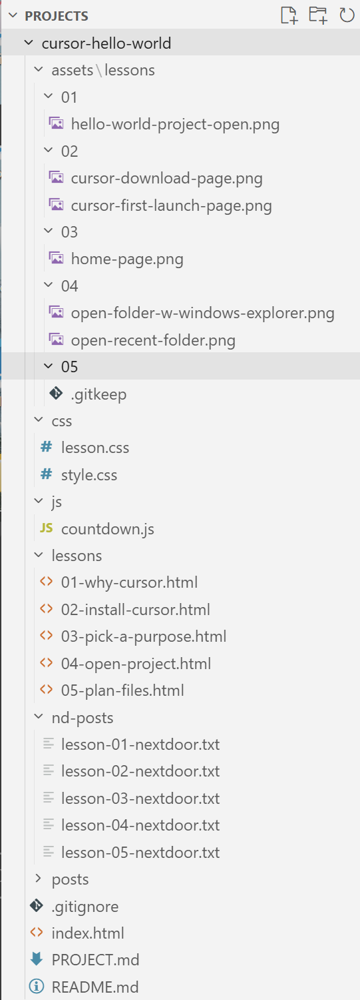

Why plan first?
A small plan keeps Cursor (and you) from creating dozens of files you do not need. For a static countdown page, three kinds of files are enough: structure, style, and behavior.
What you will build (follow-along)
If you are building your own midterm countdown, start with this layout:
hello-world/
├── index.html ← the page people see
├── css/
│ └── style.css ← colors, fonts, layout
└── js/
└── countdown.js ← days-until-election mathWhat each file does
index.html— Headline, countdown area, election date. The “document.”css/style.css— Makes the page readable and pleasant on phone and desktop.js/countdown.js— Calculates days until November 3, 2026 and puts the number on the page.
We create these files in Lessons 06 (HTML), 07 (CSS), and 08 (JavaScript).
About this site’s extra folders
The project that hosts this lesson series has more folders — because it is both a countdown site and documentation for NextDoor:
hello-world/ ← same repo on GitHub Pages
├── index.html ← countdown + lesson list
├── lessons/ ← reference pages (01, 02, …)
├── assets/lessons/ ← screenshots for lessons
├── css/ ← shared styles
└── js/countdown.js
You do not need lessons/ or assets/ for your own countdown-only site.
Let Cursor create the folders
Folder names must match exactly what your HTML will reference later —
css and js, lowercase, no spaces.
A typo (for example CSS or jss) can break links in Lessons 06–08
with errors that are hard for beginners to trace.
For this step, ask Cursor to create the folders instead of typing names by hand. You stay in control: review what Cursor proposes, then accept only the folders you planned.
- Open your
hello-worldproject in Cursor (Lesson 04). - Open Chat (or Agent) with your project folder open.
- Paste or type in chat: Create two folders in this project: css and js. Do not add any files yet.
- Read Cursor’s reply. If it offers to create extra files or folders you did not ask for, say no or edit the request.
- Accept the change when you see only
css/andjs/(empty folders are fine for now).
style.css, countdown.js, or extra config yet.
Those come in Lessons 06–08.
Explore your project in Cursor’s Explorer
After Cursor creates the folders, look at the tree yourself so you know where everything lives before you add code. Cursor’s Explorer shows your project folder, subfolders, and files in the left sidebar.
Open the file tree (if you do not see it)
Cursor’s layout varies by version. You may already see your project name and folders on the left — if so, you are in Explorer; skip to the steps below.
If the file tree is hidden, try one of these:
- Menu: View → Explorer
- Keyboard: Ctrl+Shift+E (Windows) — opens the sidebar with files
- Sidebar hidden? Press Ctrl+B to show the left sidebar, then Ctrl+Shift+E
- Icon strip: Some layouts show a narrow column of icons on the far left — click the top one labeled Explorer or Files when you hover over it
In newer Cursor versions the chat panel may be on the right and files on the left — look for your
project name (for example cursor-hello-world) in the left panel.
Walk the tree
- Find your project name at the top of the file list (for example
CURSOR-HELLO-WORLDorcursor-hello-world). - Click the arrow next to the project name to expand it.
- Confirm you see
cssandjs— names spelled exactly as above. - Expand each folder. They may be empty until Lessons 06–08; that is expected.
- Notice any files already in the project (for example
index.html).
Toolbar at the top of Explorer: New File, New Folder, Refresh, and Collapse Folders (folds everything back). You can use these later; for this lesson we rely on Cursor for folder names so they stay correct.

css and js and confirm the names match your plan
Optional (Windows): In Command Prompt, cd to your project and run
tree /F for a text tree of all folders and files. Compare it to Explorer — same structure, different view.